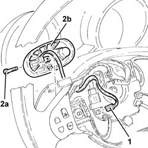
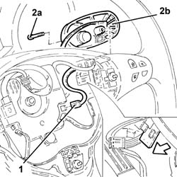

2127A30 GEAR SELECTOR LEVER for electro-hydraulic gearbox on STEERING WHEEL , (one), left or right - R.R.
- Path
- Procedures > 21 GEARBOX > 2127 ELECTRO-HYDRAULIC SELECTION. GEARBOX EXTERNAL. CONTROLS > 2127A hydraulic transmission external linkage > 2127A30 GEAR SELECTOR LEVER for electro-hydraulic gearbox on STEERING WHEEL , (one), left or right - R.R.
- Kind
- repair procedure (removal / refitting; the operation number is the code)
- Applies to
- engines: 2.0 TS, 3.2 V6; all production periods
- Interactive page
- https://sloeber94.github.io/elrnDB-a147/en/#/3025140
Applies to: engines: 2.0 TS; all production periods; only with equipment: Cambio robotizzato
 Removing
Removing
 Refitting
RefittingProceed with the removal 5580C18 air bag module - r+r .
FOR THE LEFT SIDE GEAR SELECTOR LEVER, PROCEED AS FOLLOWS.
1. Disconnect the electrical connection for the electro-hydraulic gearbox selector lever to the steering wheel.
2. Undo the bolt (2a) and remove the electro-hydraulic gearbox selector lever to the steering wheel (2b) complete with electrical wiring.

Applies to: engines: 2.0 TS; all production periods; only with equipment: Cambio robotizzato
FOR THE RIGHT SIDE GEAR SELECTOR LEVER, PROCEED AS FOLLOWS.
1. Disconnect the electrical connection for the electro-hydraulic gearbox selector lever to the steering wheel.
2. Undo the bolt (2a) and remove the electro-hydraulic gearbox selector lever to the steering wheel (2b) complete with electrical wiring.

Applies to: engines: 2.0 TS; all production periods; only with equipment: Cambio robotizzato
Refitting
RemovingPlace the electro-hydrauilc gearbox selector lever to the steering wheel back in its housing and secure it using the bolt.
Connect the electrical connection for the electro-hydraulic gearbox selector lever to the steering wheel.
Proceed with the refitting 5580C18 air bag module - r+r .
Applies to: engines: 3.2 V6; all production periods; only with equipment: Cambio robotizzato
Removing
RefittingProceed with removal 5580C18 air bag module - r+r .
PROCEED AS FOLLOWS FOR THE RIGHT LEVER.
1. Disconnect the electrical connection for the horn, then push the connector on the steering wheel as far as necessary to access the electrical wiring for the gear selector control lever.
2. Disconnect the electrical connection for the gear selector control lever.
 | Name | Connector |
|---|---|---|
2 | Data not available yet | H38 |
3. Undo the bolt (3a) and remove the gear selector control lever (3b) releasing the electrical wiring.

Applies to: engines: 3.2 V6; all production periods; only with equipment: Cambio robotizzato
PROCEED AS FOLLOWS FOR THE LEFT LEVER
1. Disconnect the electrical connection for the gear selector control lever.
| Name | Connector |
|---|---|---|
1 | Data not available yet | H38 |
2. Undo the bolt (2a) and remove the gear selector control lever (2b) releasing the electrical wiring.

Applies to: engines: 3.2 V6; all production periods; only with equipment: Cambio robotizzato
Refitting
RemovingPROCEED AS FOLLOWS FOR THE LEFT LEVER
1. Place the gear selector control lever back in its housing, taking care to position the electrical wiring as illustrated in the diagram and secure it using the bolt.
Disconnect the electrical connection for the gear selector control lever.

Applies to: engines: 3.2 V6; all production periods; only with equipment: Cambio robotizzato
PROCEED AS FOLLOWS FOR THE RIGHT LEVER.
1. Place the gear selector control lever back in its housing, taking care to position the electrical wiring as illustrated in the diagram and secure it using the bolt.
Connect the electrical connection for the gear selector control lever.
Connect the electrical connection for the horn.

Applies to: engines: 3.2 V6; all production periods; only with equipment: Cambio robotizzato
.Proceed with refitting 5580C18 air bag module - r+r .